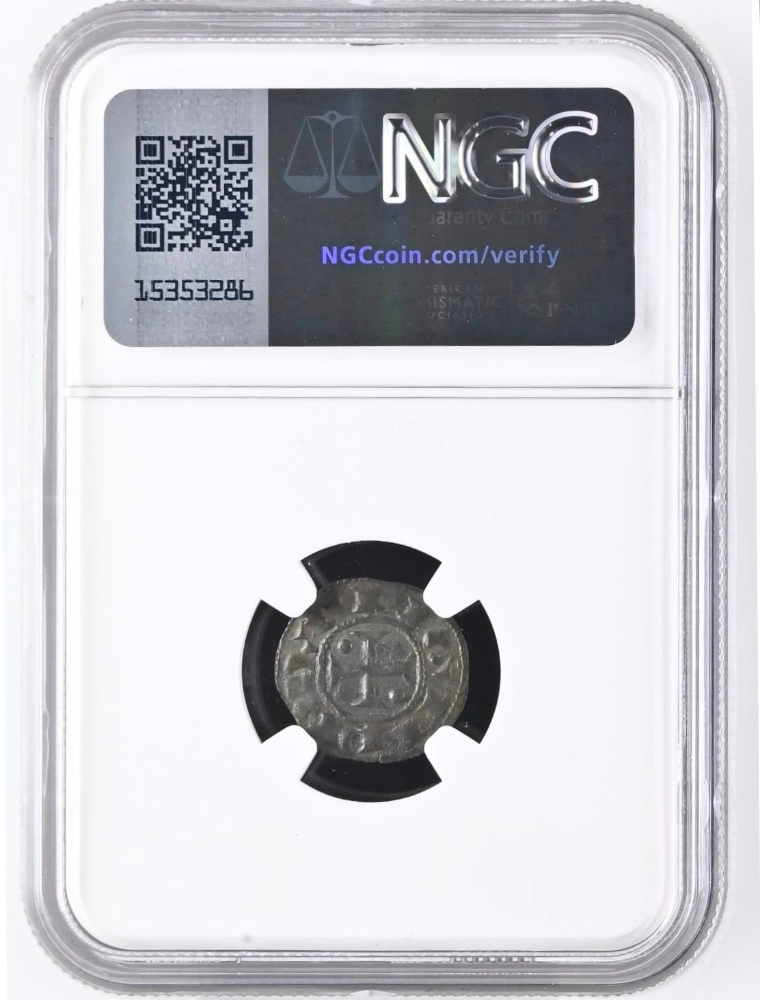

A Numismática Diamantino é uma das poucas casas de numismática pela qual ainda tenho algum respeito. São especialistas em cunhagem mecânica, com catálogo editado todos os anos.
Sendo a casa de numismática mais antiga em Portugal, parece-me que gostam de moedas e que tentam preservar um legado familiar, afirmando-se como o equivalente nacional de casas como a Bourgey ou a Schulman.
Nota-se, no entanto, que não estão confortáveis na cunhagem manual e que evitam correr riscos na mesma, dada a complexidade do estudo que se lhe associa. Assim, não é de estranhar o recurso a empresas de certificação, que deveriam funcionar como garante da autenticidade das peças.
O grande drama é que as empresas de certificação, todas estrangeiras, também não têm especialistas na cunhagem manual portuguesa, até porque cada numária tem as suas especificidades, que se intensificam em função de contextos temporais.
Seria necessário que a NGC tivesse pelo menos 5 especialistas na cunhagem manual do território nacional, para garantir a idoneidade das respectivas certificações. Assim, requerer-se-ia um especialista na numária romana, outro na numária bárbara; outro na numária românica; outro na numária gótica; e outro ainda na numária moderna, para que se conseguissem certificar peças com o mínimo de seriedade.
Este panorama, como facilmente se adivinha, é incomportável para uma empresa de certificação multinacional, que assim necessitaria de um departamento especializado para cada país, com vários funcionários em cada um desses departamentos, o que bem se percebe ser incomportável.
A solução poderá um dia vir da inteligência artificial, muito embora os modelos actuais estejam muito longe de reunir sequer a mínima competência para dirimir este tipo de situações. Será preciso treinar modelos específicos para cada numária, ou esperar que eles se treinem a eles próprios.
Até lá, continuamos a viver um marasmo muito infeliz, no qual uns asseguram a autenticidade daquilo que outros têm a certeza que não é autêntico.
Quanto às moedas de D. Afonso Henriques, estou a tentar dar o meu contributo. Tenho um livro pronto há mais de um ano, cuja edição tem sofrido sucessivos atrasos, por motivos que não me são imputáveis. Não quero sequer pensar na hipótese de alguém me estar a tentar "cancelar".
No meu livro, esta moeda está estudada e tem a referência AVF2.9.